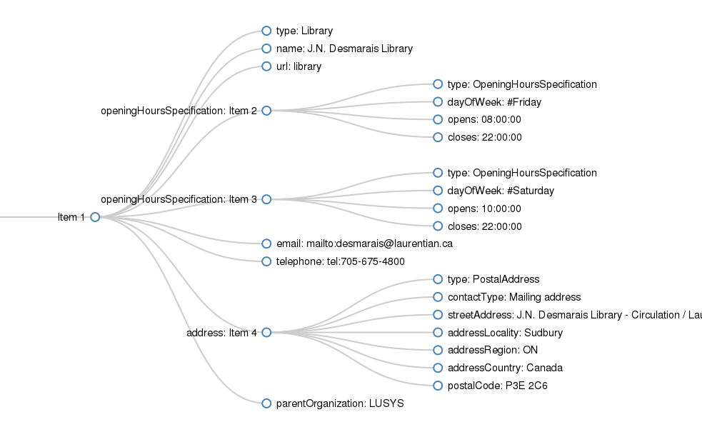
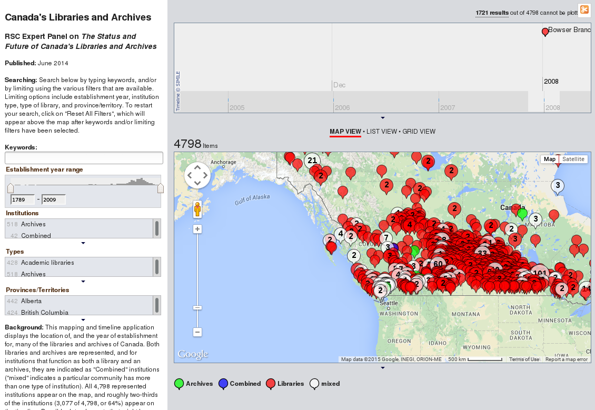
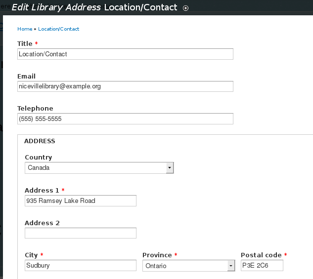

DIALLED
Distributed Index of All(*) Library Location and Event Data
schema.org

schema.org/seller
This was a sticking point...
- schema.org/Library : A library. Usage: Between 100 and 1000 domains
- schema.org/Museum : A museum. Usage: Between 10 and 100 domains
- schema.org/Archive : In the process of being defined.
- schema.org/Cemetery : A graveyard. Usage: Between 10 and 100 domains
Evergreen does this!
Most other ILSs do not
Meta-institutional data
This should be in our wheelhouse!
WorldCat Registry
authoritative single source for institutional metadata
- Problematic non-commercial license
- Mostly missing or out-of-date data
Why should you care?
- Visibility and accuracy in common search engines
- Ease of building lightweight applications
- General linked open data use cases
Inspired by CWRC
"Leading an effort"
In which I reveal I am not as persuasive as digital humanoids
Education efforts
Scott, D. (2015). White Hat Search Engine Optimization (SEO): Structured Web Data for Libraries. Partnership: The Canadian Journal of Library and Information Practice and Research, 10(1). Retrieved from https://journal.lib.uoguelph.ca/index.php/perj/article/view/3328
Education by demonstration

Education by demonstration
- An augmented Library One-Pager
- Live at dialled.ca/one_pager
- git branch at github.com/dbs/One-Pager/tree/schema.org
Standard RDFa tactics
@@ -14,14 +14,14 @@
<link rel="stylesheet" href="deps/ie.css">
<script src="//html5shiv.googlecode.com/svn/trunk/html5.js"></script>
<![endif]-->
-</head><body><div class="page">
+</head><body vocab="http://schema.org/" typeof="Library"><div class="page">
<header>
<nav>
<a href="#">Log in/Sign up</a>
<a href="#footer">Location/Hours</a>
</nav>
- <h1><a href="#">Niceville Library</a></h1>
+ <h1 property="name"><a href="#">Niceville Library</a></h1>
<form id="search"><fieldset><legend>Search Catalog</legend>
<label for="searchText"><a href="#">Catalog</a></label><input id="searchText" placeholder="Search books and more" type="search">
<input type="submit" value="Search">
Reality check
- How many of you use a static HTML library web site?
- How many use a CMS like Drupal?
- How many of you want a deep knowledge of RDFa and HTML to be the minimum bar for someone to change the opening hours on your website?
Drupal One-Pager
- A theme with user-friendly widgets that hide any implementation details.
- So easy, a University Librarian could use it!™
Location and contact info
This really isn't hard!
- NO WEBSITE REDESIGN NECESSARY
- Nobody needs to know except you and the world of linked open data
Incentives
- Cleaner data for personal agents (Hi Siri! OK, Google?)
- Inclusion in OpenStreetMap, wikidata, and the LOD Cloud
- A more dynamic CWRC map
- Making dialled.ca a possibility
Advocacy
- Partnering with CWRC
- Reaching out to co-operatives like SOLS, OLS North
- Connecting with the smartest minds in library technology
{kind=link}